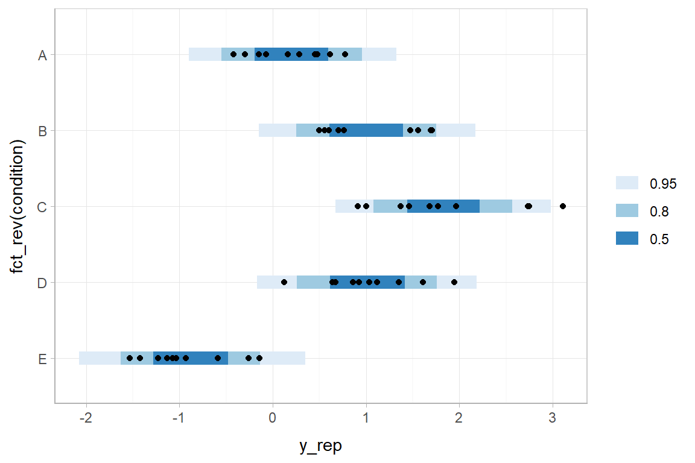
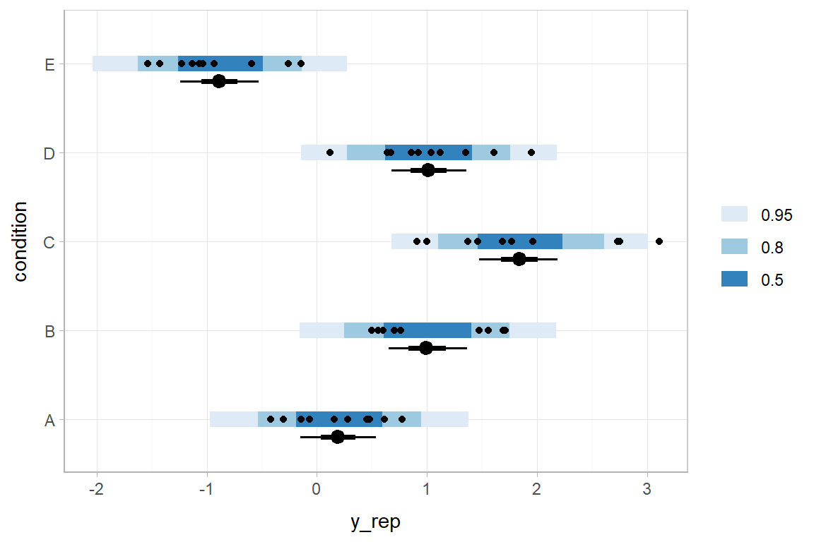
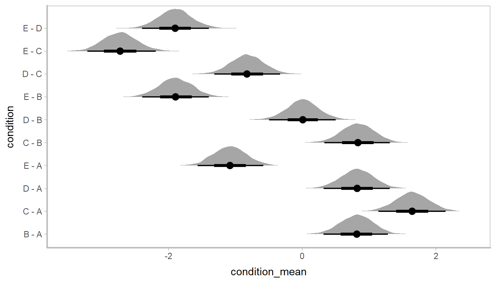
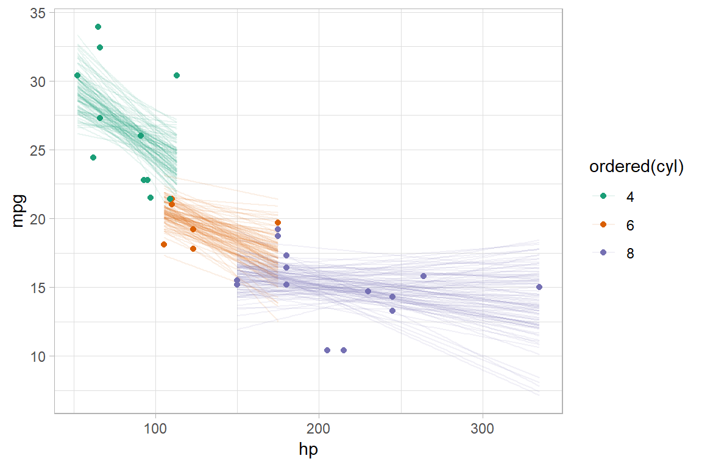
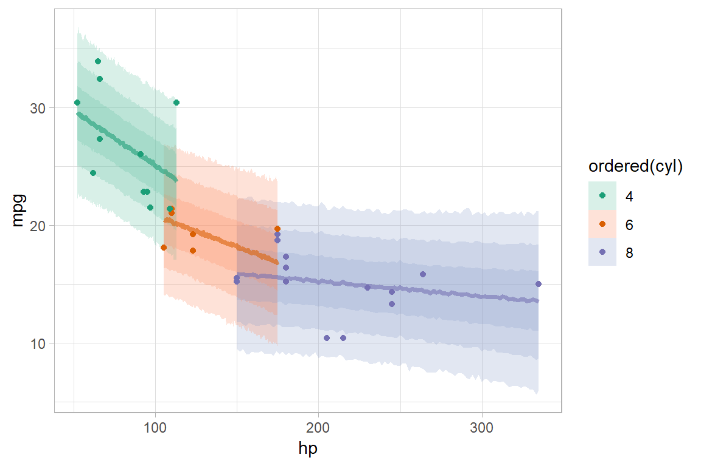
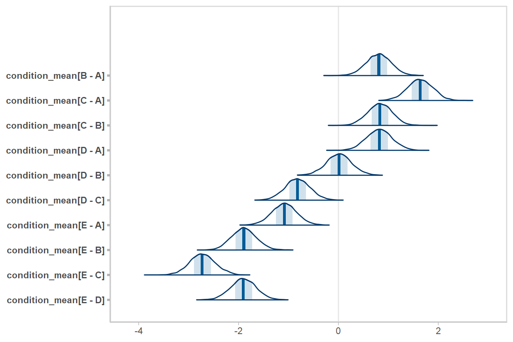
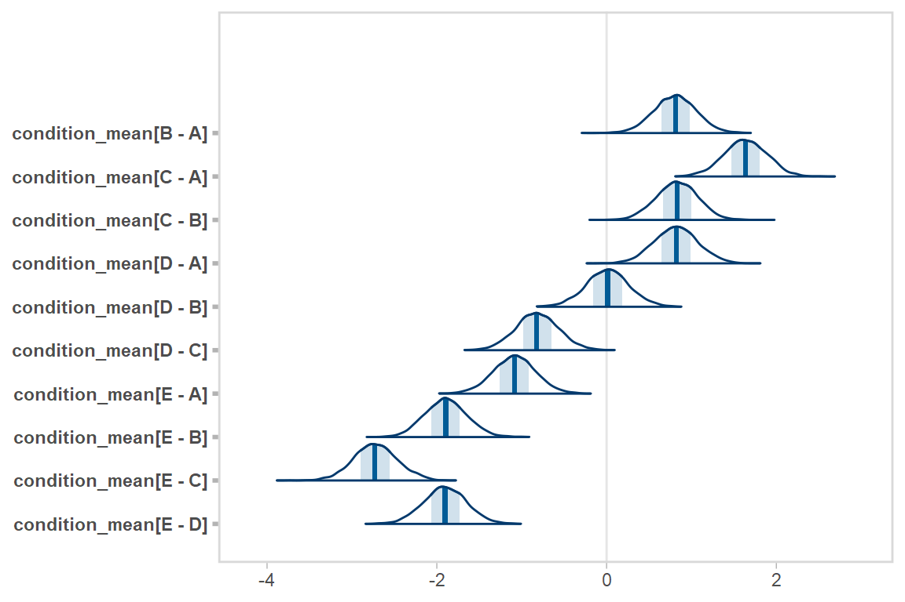
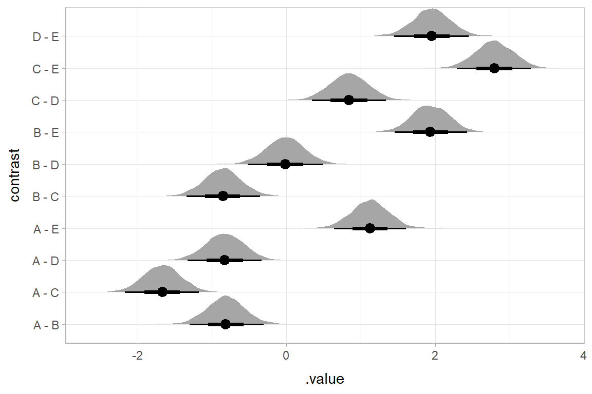

Using tidy data with Bayesian models
Matthew Kay
2018-07-31
Source:vignettes/tidybayes.Rmd
tidybayes.RmdIntroduction
This vignette introduces the tidybayes package, which facilitates the use of tidy data (one observation per row) with Bayesian models in R. This vignette is geared towards working with tidy data in general-purpose modeling functions like JAGS or Stan. For a similar introduction to the use of tidybayes with high-level modeling functions such as those in brms or rstanarm, see vignette(“tidy-brms”) or vignette(“tidy-rstanarm”).
The default output (and sometimes input) data formats of popular modeling functions like JAGS and Stan often don’t quite conform to the ideal of tidy data. For example, input formats might expect a list instead of a data frame, and for all variables to be encoded as numeric values (requiring translation of factors to numeric values and the creation of index variables to store the number of levels per factor or the number of observations in a data frame). Output formats will often be in matrix form (requiring conversion for use with libraries like ggplot), and will use numeric indices (requiring conversion back into factor level names if the you wish to make meaningfully-labeled plots or tables). tidybayes automates all of these sorts of tasks.
Philosophy
There are a few core ideas that run through the tidybayes API that should (hopefully) make it easy to use:
Tidy data does not always mean all parameter names as values. In contrast to the
ggmcmclibrary (which translates model results into a data frame with aParameterandvaluecolumn), thespread_drawsfunction intidybayesproduces in data frames where the columns are named after parameters and (in some cases) indices of those parameters, as automatically as possible and using a syntax as close to the same way you would refer to those variables in the model’s language as possible. A similar function toggmcmc’s approach is also provided ingather_draws, since sometimes you do want variable names as values in a column. The goal is fortidybayesto do the tedious work of figuring out how to make a data frame look the way you need it to, including turning parameters with indices like"b[1,2]"and the like into tidy data for you.Fit into the tidyverse.
tidybayesmethods fit into a workflow familiar to users of thetidyverse(dplyr,tidyr,ggplot2, etc), which means fitting into the pipe (%>%) workflow, using and respecting grouped data frames (thusspread_drawsandgather_drawsreturn results already grouped by variable indices, and methods likemedian_qicalculate point summaries and intervals for variables and groups simultaneously), and not reinventing too much of the wheel if it is already made easy by functions provided by existingtidyversepackages (unless it makes for much clearer code for a common idiom). For compatibility with other package column names (such asbroom::tidy),tidybayesprovides transformation functions liketo_broom_namesthat can be dropped directly into data transformation pipelines.Focus on composable operations and plotting primitives, not monolithic plots and operations. Several other packages (notably
bayesplotandggmcmc) already provide an excellent variety of pre-made methods for plotting Bayesian results.tidybayesshies away from duplicating this functionality. Instead, it focuses on providing composable operations for generating and manipulating Bayesian samples in a tidy data format, and graphical primitives forggplotthat allow you to build custom plots easily. Most simply, wherebayesplotandggmcmctend to have functions with many options that return a full ggplot object,tidybayestends towards providing primitives (likegeoms) that you can compose and combine into your own custom plots. I believe both approaches have their place: pre-made functions are especially useful for common, quick operations that don’t need customization (like many diagnostic plots), while composable operations tend to be useful for more complex custom plots (in my opinion).Sensible defaults make life easy. But options (and the data being tidy in the first place) make it easy to go your own way when you need to.
Variable names in models should be descriptive, not cryptic. This principle implies avoiding cryptic (and short) subscripts in favor of longer (but descriptive) ones. This is a matter of readability and accessibility of models to others. For example, a common pattern among Stan users (and in the Stan manual) is to use variables like
Jto refer to the number of elements in a group (e.g., number of participants) and a corresponding index likejto refer to specific elements in that group. I believe this sacrifices too much readability for the sake of concision; I prefer a pattern liken_participantfor the size of the group andparticipant(or a mnemonic short form likep) for specific elements. In functions where names are auto-generated (likecompose_data),tidybayeswill (by default) assume you want these sorts of more descriptive names; however, you can always override the default naming scheme.
Supported model types
tidybayes aims to support a variety of models with a uniform interface. Currently supported models include rstan, brms, rstanarm, runjags, rjags, jagsUI, coda::mcmc and coda::mcmc.list, MCMCglmm, and anything with its own as.mcmc.list implementation. If you install the tidybayes.rethinking package, models from the rethinking package are also supported.
For an up-to-date list of supported models, see ?"tidybayes-models".
Setup
The following libraries are required to run this vignette:
library(magrittr)
library(dplyr)
library(forcats)
library(ggplot2)
library(ggstance)
library(emmeans)
library(broom)
library(rstan)
library(rstanarm)
library(brms)
library(modelr)
library(bayesplot)
library(tidybayes)These options help Stan run faster:
Example dataset
To demonstrate tidybayes, we will use a simple dataset with 10 observations from 5 conditions each:
set.seed(5)
n = 10
n_condition = 5
ABC =
data_frame(
condition = rep(c("A","B","C","D","E"), n),
response = rnorm(n * 5, c(0,1,2,1,-1), 0.5)
)A snapshot of the data looks like this:
## # A tibble: 10 x 2
## condition response
## <chr> <dbl>
## 1 A -0.420
## 2 B 1.69
## 3 C 1.37
## 4 D 1.04
## 5 E -0.144
## 6 A -0.301
## 7 B 0.764
## 8 C 1.68
## 9 D 0.857
## 10 E -0.931(10 rows of 50)
This is a typical tidy format data frame: one observation per row. Graphically:
ABC %>%
ggplot(aes(x = response, y = fct_rev(condition))) +
geom_point(alpha = 0.5) +
ylab("condition")
Using compose_data to prepare a data frame for the model
Shunting data from a data frame into a format usable in samplers like JAGS or Stan can involve a tedious set of operations, like generating index variables storing the number of operations or the number of levels in a factor. compose_data automates these operations.
A hierarchical model of our example data might fit an overall mean across the conditions (overall_mean), the standard deviation of the condition means (condition_mean_sd), the mean within each condition (condition_mean[condition]) and the standard deviation of the responses given a condition mean (response_sd):
data {
int<lower=1> n;
int<lower=1> n_condition;
int<lower=1, upper=n_condition> condition[n];
real response[n];
}
parameters {
real overall_mean;
vector[n_condition] condition_zoffset;
real<lower=0> response_sd;
real<lower=0> condition_mean_sd;
}
transformed parameters {
vector[n_condition] condition_mean;
condition_mean = overall_mean + condition_zoffset * condition_mean_sd;
}
model {
response_sd ~ cauchy(0, 1); // => half-cauchy(0, 1)
condition_mean_sd ~ cauchy(0, 1); // => half-cauchy(0, 1)
overall_mean ~ normal(0, 5);
condition_zoffset ~ normal(0, 1); // => condition_mean ~ normal(overall_mean, condition_mean_sd)
for (i in 1:n) {
response[i] ~ normal(condition_mean[condition[i]], response_sd);
}
}We have compiled and loaded this model into the variable ABC_stan.
This model expects these variables as input:
-
n: number of observations -
n_condition: number of conditions -
condition: a vector of integers indicating the condition of each observation -
response: a vector of observations
Our data frame (ABC) only has response and condition, and condition is in the wrong format (it is a factor instead of numeric). However, compose_data can generate a list containing the above variables in the correct format automatically. It recognizes that condition is a factor and converts it to a numeric, adds the n_condition variable automatically containing the number of levels in condition, and adds the n column containing the number of observations (number of rows in the data frame):
## $condition
## [1] 1 2 3 4 5 1 2 3 4 5 1 2 3 4 5 1 2 3 4 5 1 2 3 4 5 1 2 3 4 5 1 2 3 4 5 1 2 3 4 5 1 2 3 4 5 1 2 3
## [49] 4 5
##
## $n_condition
## [1] 5
##
## $response
## [1] -0.42042774 1.69217967 1.37225407 1.03507138 -0.14427956 -0.30145399 0.76391681 1.68231434
## [9] 0.85711318 -0.93094589 0.61381517 0.59911027 1.45980370 0.92123282 -1.53588002 -0.06949307
## [17] 0.70134345 0.90801662 1.12040863 -1.12967770 0.45025597 1.47093470 2.73398095 1.35338054
## [25] -0.59049553 -0.14674092 1.70929454 2.74938691 0.67145895 -1.42639772 0.15795752 1.55484708
## [33] 3.10773029 1.60855182 -0.26038911 0.47578692 0.49523368 0.99976363 0.11890706 -1.07130406
## [41] 0.77503018 0.59878841 1.96271054 1.94783398 -1.22828447 0.28111168 0.55649574 1.76987771
## [49] 0.63783576 -1.03460558
##
## $n
## [1] 50This makes it easy to skip right to running the model without munging the data yourself:
The results look like this:
## Inference for Stan model: a079ffbff39f9d3c47919d14be5398a6.
## 4 chains, each with iter=2000; warmup=1000; thin=1;
## post-warmup draws per chain=1000, total post-warmup draws=4000.
##
## mean se_mean sd 2.5% 25% 50% 75% 97.5% n_eff Rhat
## overall_mean 0.59 0.02 0.57 -0.59 0.26 0.59 0.93 1.69 825 1
## condition_mean_sd 1.22 0.02 0.56 0.61 0.87 1.09 1.43 2.49 1021 1
## condition_mean[1] 0.19 0.00 0.17 -0.14 0.08 0.19 0.31 0.55 4000 1
## condition_mean[2] 1.01 0.00 0.17 0.66 0.89 1.00 1.12 1.35 4000 1
## condition_mean[3] 1.84 0.00 0.18 1.49 1.72 1.84 1.96 2.18 4000 1
## condition_mean[4] 1.01 0.00 0.18 0.65 0.89 1.01 1.13 1.37 4000 1
## condition_mean[5] -0.89 0.00 0.18 -1.24 -1.02 -0.89 -0.77 -0.54 4000 1
## response_sd 0.56 0.00 0.06 0.45 0.52 0.56 0.60 0.70 1698 1
##
## Samples were drawn using NUTS(diag_e) at Tue Jul 31 19:40:14 2018.
## For each parameter, n_eff is a crude measure of effective sample size,
## and Rhat is the potential scale reduction factor on split chains (at
## convergence, Rhat=1).
Extracting draws from a fit in tidy-format using spread_draws
Extracting model variable indices into a separate column in a tidy format data frame
Now that we have our results, the fun begins: getting the draws out in a tidy format! The default methods in Stan for extracting draws from the model do so in a nested format:
## List of 6
## $ overall_mean : num [1:4000(1d)] 1.422 1.508 0.984 0.14 1.402 ...
## ..- attr(*, "dimnames")=List of 1
## .. ..$ iterations: NULL
## $ condition_zoffset: num [1:4000, 1:5] -1.7742 -0.5655 -0.4899 0.0689 -0.4516 ...
## ..- attr(*, "dimnames")=List of 2
## .. ..$ iterations: NULL
## .. ..$ : NULL
## $ response_sd : num [1:4000(1d)] 0.474 0.541 0.53 0.549 0.627 ...
## ..- attr(*, "dimnames")=List of 1
## .. ..$ iterations: NULL
## $ condition_mean_sd: num [1:4000(1d)] 0.797 2.123 1.838 1.234 1.982 ...
## ..- attr(*, "dimnames")=List of 1
## .. ..$ iterations: NULL
## $ condition_mean : num [1:4000, 1:5] 0.00793 0.30764 0.08418 0.22466 0.50649 ...
## ..- attr(*, "dimnames")=List of 2
## .. ..$ iterations: NULL
## .. ..$ : NULL
## $ lp__ : num [1:4000(1d)] -2.83 -1.32 4.15 2.64 1.59 ...
## ..- attr(*, "dimnames")=List of 1
## .. ..$ iterations: NULLThere are also methods for extracting draws as matrices or data frames in Stan (and other model types, such as JAGS and MCMCglmm, have their own formats).
The spread_draws method yields a common format for all model types supported by tidybayes. It lets us instead extract draws into a data frame in tidy format, with a .chain and .iteration column storing the chain and iteration for each row (if available), a .draw column that uniquely indexes each draw, and the remaining columns corresponding to model variables or variable indices. The spread_draws method accepts any number of column specifications, which can include names for variables and names for variable indices. For example, we can extract the condition_mean variable as a tidy data frame, and put the value of its first (and only) index into the condition column, using a syntax that directly echoes how we would specify indices of the condition_mean variable in the model itself:
## # A tibble: 10 x 5
## # Groups: condition [5]
## .chain .iteration .draw condition condition_mean
## <int> <int> <int> <int> <dbl>
## 1 1 1 1 1 -0.0488
## 2 1 1 1 2 1.19
## 3 1 1 1 3 1.90
## 4 1 1 1 4 0.962
## 5 1 1 1 5 -0.878
## 6 1 2 2 1 0.193
## 7 1 2 2 2 1.07
## 8 1 2 2 3 1.97
## 9 1 2 2 4 1.12
## 10 1 2 2 5 -1.09(10 rows of 50)
Automatically converting columns and indices back into their original data types
As-is, the resulting variables don’t know anything about where their indices came from. The index of the condition_mean variable was originally derived from the condition factor in the ABC data frame. But Stan doesn’t know this: it is just a numeric index to Stan, so the condition column just contains numbers (1, 2, 3, 4, 5) instead of the factor levels these numbers correspond to ("A", "B", "C", "D", "E").
We can recover this missing type information by passing the model through recover_types before using spread_draws. In itself recover_types just returns a copy of the model, with some additional attributes that store the type information from the data frame (or other objects) that you pass to it. This doesn’t have any useful effect by itself, but functions like spread_draws use this information to convert any column or index back into the data type of the column with the same name in the original data frame. In this example, spread_draws recognizes that the condition column was a factor with five levels ("A", "B", "C", "D", "E") in the original data frame, and automatically converts it back into a factor:
## # A tibble: 10 x 5
## # Groups: condition [5]
## .chain .iteration .draw condition condition_mean
## <int> <int> <int> <fct> <dbl>
## 1 1 1 1 A -0.0488
## 2 1 1 1 B 1.19
## 3 1 1 1 C 1.90
## 4 1 1 1 D 0.962
## 5 1 1 1 E -0.878
## 6 1 2 2 A 0.193
## 7 1 2 2 B 1.07
## 8 1 2 2 C 1.97
## 9 1 2 2 D 1.12
## 10 1 2 2 E -1.09(10 rows of 20000)
Because we often want to make multiple separate calls to spread_draws, it is often convenient to decorate the original model using recover_types immediately after it has been fit, so we only have to call it once:
Now we can omit the recover_types call before subsequent calls to spread_draws.
Point summaries and intervals with the point_interval functions: [median|mean|mode]_[qi|hdi]
With simple variables, wide format
tidybayes provides a family of functions for generating point summaries and intervals from draws in a tidy format. These functions follow the naming scheme [median|mean|mode]_[qi|hdi], for example, median_qi, mean_qi, mode_hdi, and so on. The first name (before the _) indicates the type of point summary, and the second name indicates the type of interval. qi yields a quantile interval (a.k.a. equi-tailed interval, central interval, or percentile interval) and hdi yields a highest density interval. Custom point or interval functions can also be applied using the point_interval function.
For example, we might extract the draws corresponding to the overall mean and standard deviation of observations:
## # A tibble: 10 x 5
## .chain .iteration .draw overall_mean response_sd
## <int> <int> <int> <dbl> <dbl>
## 1 1 1 1 0.810 0.582
## 2 1 2 2 0.762 0.596
## 3 1 3 3 0.689 0.556
## 4 1 4 4 0.845 0.581
## 5 1 5 5 0.626 0.617
## 6 1 6 6 0.431 0.535
## 7 1 7 7 0.475 0.556
## 8 1 8 8 0.542 0.489
## 9 1 9 9 1.24 0.608
## 10 1 10 10 1.14 0.630(10 rows of 4000)
Like with condition_mean[condition], this gives us a tidy data frame. If we want the median and 95% quantile interval of the variables, we can apply median_qi:
## # A tibble: 1 x 9
## overall_mean overall_mean.lo~ overall_mean.up~ response_sd response_sd.low~ response_sd.upp~
## <dbl> <dbl> <dbl> <dbl> <dbl> <dbl>
## 1 0.586 -0.587 1.69 0.556 0.453 0.700
## # ... with 3 more variables: .width <dbl>, .point <chr>, .interval <chr>median_qi summarizes each input column using its median. If there are multiple columns to summarize, each gets its own x.lower and x.upper column (for each column x) corresponding to the bounds of the .width% interval. If there is only one column, the names .lower and .upper are used for the interval bounds.
We can specify the columns we want to get medians and intervals from, as above, or if we omit the list of columns, median_qi will use every column that is not a grouping column or a special column (like .chain, .iteration, or .draw). Thus in the above example, overall_mean and response_sd are redundant arguments to median_qi because they are also the only columns we gathered from the model. So we can simplify the previous code to the following:
## # A tibble: 1 x 9
## overall_mean overall_mean.lo~ overall_mean.up~ response_sd response_sd.low~ response_sd.upp~
## <dbl> <dbl> <dbl> <dbl> <dbl> <dbl>
## 1 0.586 -0.587 1.69 0.556 0.453 0.700
## # ... with 3 more variables: .width <dbl>, .point <chr>, .interval <chr>With indexed variables
When we have a variable with one or more indices, such as condition_mean, we can apply median_qi (or other functions in the point_interval family) as we did before:
## # A tibble: 5 x 7
## condition condition_mean .lower .upper .width .point .interval
## <fct> <dbl> <dbl> <dbl> <dbl> <chr> <chr>
## 1 A 0.191 -0.137 0.548 0.95 median qi
## 2 B 1.00 0.656 1.35 0.95 median qi
## 3 C 1.84 1.49 2.18 0.95 median qi
## 4 D 1.01 0.654 1.37 0.95 median qi
## 5 E -0.894 -1.24 -0.544 0.95 median qiHow did median_qi know what to aggregate? Data frames returned by spread_draws are automatically grouped by all index variables you pass to it; in this case, that means it groups by condition. median_qi respects groups, and calculates the point summaries and intervals within all groups. Then, because no columns were passed to median_qi, it acts on the only non-special (.-prefixed) and non-group column, condition_mean. So the above shortened syntax is equivalent to this more verbose call:
m %>%
spread_draws(condition_mean[condition]) %>%
group_by(condition) %>% # this line not necessary (done automatically by spread_draws)
median_qi(condition_mean)## # A tibble: 5 x 7
## condition condition_mean .lower .upper .width .point .interval
## <fct> <dbl> <dbl> <dbl> <dbl> <chr> <chr>
## 1 A 0.191 -0.137 0.548 0.95 median qi
## 2 B 1.00 0.656 1.35 0.95 median qi
## 3 C 1.84 1.49 2.18 0.95 median qi
## 4 D 1.01 0.654 1.37 0.95 median qi
## 5 E -0.894 -1.24 -0.544 0.95 median qiWhen given only a single column, median_qi will use the names .lower and .upper for the lower and upper ends of the intervals.
Plotting points and intervals
Using geom_pointinterval/geom_pointintervalh
Plotting medians and intervals is straightforward using the pointinterval geom (or its horizontal version, pointintervalh), which are a modified versions of ggplot2::geom_pointrange and ggstance::geom_pointrangeh with sensible defaults for multiple intervals (functionality we will use later):
m %>%
spread_draws(condition_mean[condition]) %>%
median_qi() %>%
ggplot(aes(y = fct_rev(condition), x = condition_mean, xmin = .lower, xmax = .upper)) +
geom_pointintervalh()
geom_pointintervalh includes xmin = .lower and xmax = .upper in its default aesthetics, so these can be omitted:
m %>%
spread_draws(condition_mean[condition]) %>%
median_qi() %>%
ggplot(aes(y = fct_rev(condition), x = condition_mean)) +
geom_pointintervalh()
Using stat_pointinterval/stat_pointintervalh
Rather than summarizing the posterior before calling ggplot, we could also use stat_pointinterval / stat_pointintervalh to perform the summary within ggplot:
m %>%
spread_draws(condition_mean[condition]) %>%
ggplot(aes(y = fct_rev(condition), x = condition_mean)) +
stat_pointintervalh()
These functions have .width = c(.66, .95) by default (showing 66% and 95% intervals), but this can be changed by passing a .width argument to stat_pointinterval / stat_pointintervalh.
A note on functions ending in h
tidybayes follows the naming convention established by ggstance for horizontal versions of geoms and summary functions. It includes horizontal versions of all point_interval functions, which differ only in their behavior when passed a vector instead of a data frame. These functions have the same name as their vertical counterparts, but end with h.
When using point_interval family functions with geoms and stats defined by packages other than of tidybayes, you may need to use the horizontal versions of the point_interval functions, like median_qih (e.g. in the fun.data argument of ggstance::stat_summaryh). This is because median_qi returns a data frame with y, ymin, and ymax columns when passed a vector (making it suitable for ggplot2::stat_summary), and median_qih returns a data frame with x, xmin, and xmax columns when passed a vector (making it suitable for ggstance::stat_summaryh). You do not need to use these functions with tidybayes stats and geoms; the point_interval argument to tidybayes stats and geoms (like stat_pointinterval and stat_pointintervalh) will automatically convert output of summary functions to the correct aesthetics.
Intervals with posterior violins (“eye plots”): geom_eye and geom_eyeh
The stat_summary approach to generating intervals makes it easy to add violin plots of posterior densities to the plot using geom_violin/geom_violinh, forming “eye plots”:
m %>%
spread_draws(condition_mean[condition]) %>%
ggplot(aes(y = fct_rev(condition), x = condition_mean)) +
geom_violinh(color = NA, fill = "gray65") +
stat_pointintervalh(.width = c(.95, .66))
The geom_eye and geom_eyeh geoms provide a shortcut to generating eye plots with some sensible defaults:
m %>%
spread_draws(condition_mean[condition]) %>%
ggplot(aes(y = fct_rev(condition), x = condition_mean)) +
geom_eyeh()
Intervals with posterior densities (“half-eye plots”): geom_halfeyeh
If you prefer densities over violins, you can use geom_halfeyeh (the vertical version, not yet available, will be called geom_halfeye). This example also demonstrates how to change the interval probability (here, to 99% and 80% intervals):
m %>%
spread_draws(condition_mean[condition]) %>%
ggplot(aes(y = fct_rev(condition), x = condition_mean)) +
geom_halfeyeh(.width = c(.99, .8))
Intervals with multiple probability levels: the .width = argument
median_qi and its sister functions can also produce an arbitrary number of probability intervals by setting the .width = argument:
## # A tibble: 15 x 7
## condition condition_mean .lower .upper .width .point .interval
## <fct> <dbl> <dbl> <dbl> <dbl> <chr> <chr>
## 1 A 0.191 -0.137 0.548 0.95 median qi
## 2 B 1.00 0.656 1.35 0.95 median qi
## 3 C 1.84 1.49 2.18 0.95 median qi
## 4 D 1.01 0.654 1.37 0.95 median qi
## 5 E -0.894 -1.24 -0.544 0.95 median qi
## 6 A 0.191 -0.0238 0.411 0.8 median qi
## 7 B 1.00 0.784 1.23 0.8 median qi
## 8 C 1.84 1.61 2.06 0.8 median qi
## 9 D 1.01 0.787 1.24 0.8 median qi
## 10 E -0.894 -1.12 -0.665 0.8 median qi
## 11 A 0.191 0.0751 0.307 0.5 median qi
## 12 B 1.00 0.890 1.12 0.5 median qi
## 13 C 1.84 1.72 1.96 0.5 median qi
## 14 D 1.01 0.893 1.13 0.5 median qi
## 15 E -0.894 -1.02 -0.769 0.5 median qiThe results are in a tidy format: one row per index (condition) and probability level (.width). This facilitates plotting. For example, assigning -.width to the size aesthetic will show all intervals, making thicker lines correspond to smaller intervals:
m %>%
spread_draws(condition_mean[condition]) %>%
median_qi(.width = c(.95, .66)) %>%
ggplot(aes(y = fct_rev(condition), x = condition_mean,
size = -.width)) + # smaller probability interval => thicker line
geom_pointintervalh()
Just as geom_pointintervalh includes xmin = .lower and xmax = .upper as default aesthetics, it also includes size = -.width to facilitate exactly this usage. This, the above can be simplified to:
m %>%
spread_draws(condition_mean[condition]) %>%
median_qi(.width = c(.95, .66)) %>%
ggplot(aes(y = fct_rev(condition), x = condition_mean)) +
geom_pointintervalh()
Just as the point_interval functions can generate an arbitrary number of intervals per distribution, so too can geom_pointrangeh draw an arbitrary number of intervals, though in most cases this starts to get pretty silly (and will require the use of size_range =, which determines the minimum and maximum line thickness, to make it legible). Here it is with 3:
m %>%
spread_draws(condition_mean[condition]) %>%
median_qi(.width = c(.95, .8, .5)) %>%
ggplot(aes(y = fct_rev(condition), x = condition_mean)) +
geom_pointintervalh(size_range = c(0.5, 2))
Plotting posteriors as quantile dotplots
Intervals are nice if the alpha level happens to line up with whatever decision you are trying to make, but getting a shape of the posterior is better (hence eye plots, above). On the other hand, making inferences from density plots is imprecise (estimating the area of one shape as a proportion of another is a hard perceptual task). Reasoning about probability in frequency formats is easier, motivating quantile dotplots, which also allow precise estimation of arbitrary intervals (down to the dot resolution of the plot, here 100):
m %>%
spread_draws(condition_mean[condition]) %>%
do(data_frame(condition_mean = quantile(.$condition_mean, ppoints(100)))) %>%
ggplot(aes(x = condition_mean)) +
geom_dotplot(binwidth = .04) +
facet_grid(fct_rev(condition) ~ .) +
scale_y_continuous(breaks = NULL)
The idea is to get away from thinking about the posterior as indicating one canonical point or interval, but instead to represent it as (say) 100 approximately equally likely points.
Alternative point summaries and intervals: median, mean, mode; qi, hdi, hdci
The point_interval family of functions follow the naming scheme [median|mean|mode]_[qi|hdi|hdci][h|], and all work in the same way as median_qi: they take a series of names (or expressions calculated on columns) and summarize those columns with the corresponding point summary function (median, mean, or mode) and interval (qi, hdi, or hdci). qi yields a quantile interval (a.k.a. equi-tailed interval, central interval, or percentile interval), hdi yields one or more highest (posterior) density interval(s), and hdci yields a single (possibly) highest-density continuous interval. These can be used in any combination desired.
The *_hdi functions have an additional difference: In the case of multimodal distributions, they may return multiple intervals for each probability level. Here are some draws from a multimodal normal mixture:
Passed through mode_hdi, we get multiple intervals at the 80% probability level:
## # A tibble: 2 x 6
## x .lower .upper .width .point .interval
## <dbl> <dbl> <dbl> <dbl> <chr> <chr>
## 1 -0.000854 -1.53 1.60 0.8 mode hdi
## 2 -0.000854 3.03 4.98 0.8 mode hdiThis is easier to see when plotted:
multimodal_draws %>%
ggplot(aes(x = x)) +
stat_density(fill = "gray75") +
stat_pointintervalh(aes(y = -0.05), point_interval = median_qi, .width = c(.95, .80)) +
annotate("text", label = "median, 80% and 95% quantile intervals", x = 6, y = -0.05, hjust = 0, vjust = 0.3) +
stat_pointintervalh(aes(y = -0.025), point_interval = mode_hdi, .width = c(.95, .80)) +
annotate("text", label = "mode, 80% and 95% highest-density intervals", x = 6, y = -0.025, hjust = 0, vjust = 0.3) +
xlim(-3.5, 14.5)
Combining variables with different indices in a single tidy format data frame
spread_draws supports extracting variables that have different indices. It automatically matches up indices with the same name, and duplicates values as necessary to produce one row per all combination of levels of all indices. For example, we might want to calculate the difference between each condition mean and the overall mean. To do that, we can extract draws from the overall mean and all condition means:
## # A tibble: 10 x 6
## # Groups: condition [5]
## .chain .iteration .draw overall_mean condition condition_mean
## <int> <int> <int> <dbl> <fct> <dbl>
## 1 1 1 1 0.810 A -0.0488
## 2 1 1 1 0.810 B 1.19
## 3 1 1 1 0.810 C 1.90
## 4 1 1 1 0.810 D 0.962
## 5 1 1 1 0.810 E -0.878
## 6 1 2 2 0.762 A 0.193
## 7 1 2 2 0.762 B 1.07
## 8 1 2 2 0.762 C 1.97
## 9 1 2 2 0.762 D 1.12
## 10 1 2 2 0.762 E -1.09(10 rows of 20000)
Within each draw, overall_mean is repeated as necessary to correspond to every index of condition_mean. Thus, the mutate function from dplyr can be used to take the differences over all rows, then we can summarize with median_qi:
m %>%
spread_draws(overall_mean, condition_mean[condition]) %>%
mutate(condition_offset = condition_mean - overall_mean) %>%
median_qi(condition_offset)## # A tibble: 5 x 7
## condition condition_offset .lower .upper .width .point .interval
## <fct> <dbl> <dbl> <dbl> <dbl> <chr> <chr>
## 1 A -0.398 -1.59 0.803 0.95 median qi
## 2 B 0.408 -0.756 1.62 0.95 median qi
## 3 C 1.24 0.0928 2.47 0.95 median qi
## 4 D 0.416 -0.737 1.63 0.95 median qi
## 5 E -1.47 -2.65 -0.301 0.95 median qiPosterior predictions
We can use combinations of variables with difference indices to generate predictions from the model. In this case, we can combine the condition means with the residual standard deviation to generate predictive distributions from the model:
m %>%
spread_draws(condition_mean[condition], response_sd) %>%
mutate(y_rep = rnorm(n(), condition_mean, response_sd)) %>%
ggplot(aes(x = y_rep)) +
stat_density(fill = "gray75") +
facet_grid(condition ~ ., switch = "y")
And even summarize these as predictive intervals and compare them to the data:
m %>%
spread_draws(condition_mean[condition], response_sd) %>%
mutate(y_rep = rnorm(n(), condition_mean, response_sd)) %>%
median_qi(y_rep, .width = c(.95, .8, .5)) %>%
ggplot(aes(y = fct_rev(condition), x = y_rep)) +
geom_intervalh() + #auto-sets aes(xmin = .lower, xmax = .upper, color = fct_rev(ordered(.width)))
geom_point(aes(x = response), data = ABC) +
scale_color_brewer()
If this model is well-calibrated, about 95% of the data should be within the outer intervals, 80% in the next-smallest intervals, and 50% in the smallest intervals.
Posterior predictions with posterior distributions of means
Altogether, data, posterior predictions, and posterior distributions of the means:
draws = m %>%
spread_draws(condition_mean[condition], response_sd)
reps = draws %>%
mutate(y_rep = rnorm(n(), condition_mean, response_sd)) %>%
median_qi(y_rep, .width = c(.95, .8, .5))
means = draws %>%
median_qi(condition_mean, .width = c(.95, .66))
ABC %>%
ggplot(aes(y = condition)) +
geom_intervalh(aes(x = y_rep), data = reps) +
geom_pointintervalh(aes(x = condition_mean), position = position_nudge(y = -0.2), data = means) +
geom_point(aes(x = response)) +
scale_color_brewer()
Comparing levels of a factor
compare_levels allows us to compare the value of some variable across levels of some factor. By default it computes all pairwise differences, though this can be changed using the comparison = argument:
#N.B. the syntax for compare_levels is experimental and may change
m %>%
spread_draws(condition_mean[condition]) %>%
compare_levels(condition_mean, by = condition) %>%
ggplot(aes(y = condition, x = condition_mean)) +
geom_halfeyeh()
Gathering all model variable names into a single column: gather_draws and gather_variables
We might also prefer all model variable names to be in a single column (long-format) instead of as column names. There are two methods for obtaining long-format data frames with tidybayes, whose use depends on where and how in the data processing chain you might want to transform into long-format: gather_draws and gather_variables. There are also two methods for wide (or semi-wide) format data frame, spread_draws (described previously) and tidy_draws.
gather_draws is the counterpart to spread_draws, except it puts all variable names in a .variable column and all draws in a .value column:
## # A tibble: 6 x 8
## # Groups: .variable [2]
## .variable condition .value .lower .upper .width .point .interval
## <chr> <fct> <dbl> <dbl> <dbl> <dbl> <chr> <chr>
## 1 condition_mean A 0.191 -0.137 0.548 0.95 median qi
## 2 condition_mean B 1.00 0.656 1.35 0.95 median qi
## 3 condition_mean C 1.84 1.49 2.18 0.95 median qi
## 4 condition_mean D 1.01 0.654 1.37 0.95 median qi
## 5 condition_mean E -0.894 -1.24 -0.544 0.95 median qi
## 6 overall_mean <NA> 0.586 -0.587 1.69 0.95 median qiNote that condition = NA for the overall_mean row, because it does not have an index with that name in the specification passed to gather_draws.
While this works well if we do not need to perform computations that involve multiple columns, the semi-wide format returned by spread_draws is very useful for computations that involve multiple columns names, such as the calculation of the condition_offset above. If we want to make intermediate computations on the format returned by spread_draws and then gather variables into one column, we can use gather_variables, which will gather all non-grouped variables that are not special columns (like .chain, .iteration, or .draw):
m %>%
spread_draws(overall_mean, condition_mean[condition]) %>%
mutate(condition_offset = condition_mean - overall_mean) %>%
gather_variables() %>%
median_qi()## # A tibble: 15 x 8
## # Groups: condition [5]
## condition .variable .value .lower .upper .width .point .interval
## <fct> <chr> <dbl> <dbl> <dbl> <dbl> <chr> <chr>
## 1 A condition_mean 0.191 -0.137 0.548 0.95 median qi
## 2 A condition_offset -0.398 -1.59 0.803 0.95 median qi
## 3 A overall_mean 0.586 -0.587 1.69 0.95 median qi
## 4 B condition_mean 1.00 0.656 1.35 0.95 median qi
## 5 B condition_offset 0.408 -0.756 1.62 0.95 median qi
## 6 B overall_mean 0.586 -0.587 1.69 0.95 median qi
## 7 C condition_mean 1.84 1.49 2.18 0.95 median qi
## 8 C condition_offset 1.24 0.0928 2.47 0.95 median qi
## 9 C overall_mean 0.586 -0.587 1.69 0.95 median qi
## 10 D condition_mean 1.01 0.654 1.37 0.95 median qi
## 11 D condition_offset 0.416 -0.737 1.63 0.95 median qi
## 12 D overall_mean 0.586 -0.587 1.69 0.95 median qi
## 13 E condition_mean -0.894 -1.24 -0.544 0.95 median qi
## 14 E condition_offset -1.47 -2.65 -0.301 0.95 median qi
## 15 E overall_mean 0.586 -0.587 1.69 0.95 median qiNote how overall_mean is now repeated here for each condition, because we have performed the gather after spreading model variables across columns.
Finally, if we want raw model variable names as columns names instead of having indices split out as their own column names, we can use tidy_draws. Generally speaking spread_draws and gather_draws are typically more useful that tidy_draws, but it is provided as a common method for generating data frames from many types of Bayesian models, and is used internally by gather_draws and spread_draws:
## # A tibble: 10 x 17
## .chain .iteration .draw overall_mean `condition_zoff~ `condition_zoff~ `condition_zoff~
## <int> <int> <int> <dbl> <dbl> <dbl> <dbl>
## 1 1 1 1 0.810 -0.743 0.330 0.941
## 2 1 2 2 0.762 -0.441 0.239 0.941
## 3 1 3 3 0.689 -0.358 0.0563 0.751
## 4 1 4 4 0.845 -0.564 0.277 0.573
## 5 1 5 5 0.626 -0.234 0.225 0.976
## 6 1 6 6 0.431 -0.0670 1.04 1.74
## 7 1 7 7 0.475 -0.658 0.553 1.75
## 8 1 8 8 0.542 -0.409 0.680 1.74
## 9 1 9 9 1.24 -0.730 -0.387 0.717
## 10 1 10 10 1.14 -0.690 -0.265 0.805
## # ... with 10 more variables: `condition_zoffset[4]` <dbl>, `condition_zoffset[5]` <dbl>,
## # response_sd <dbl>, condition_mean_sd <dbl>, `condition_mean[1]` <dbl>,
## # `condition_mean[2]` <dbl>, `condition_mean[3]` <dbl>, `condition_mean[4]` <dbl>,
## # `condition_mean[5]` <dbl>, lp__ <dbl>(10 rows of 4000)
Combining tidy_draws with gather_variables also allows us to derive similar output to ggmcmc::ggs, if desired:
## # A tibble: 10 x 5
## # Groups: .variable [1]
## .chain .iteration .draw .variable .value
## <int> <int> <int> <chr> <dbl>
## 1 1 1 1 overall_mean 0.810
## 2 1 2 2 overall_mean 0.762
## 3 1 3 3 overall_mean 0.689
## 4 1 4 4 overall_mean 0.845
## 5 1 5 5 overall_mean 0.626
## 6 1 6 6 overall_mean 0.431
## 7 1 7 7 overall_mean 0.475
## 8 1 8 8 overall_mean 0.542
## 9 1 9 9 overall_mean 1.24
## 10 1 10 10 overall_mean 1.14(10 rows of 56000)
But again, this approach does not handle variable indices for us automatically, so using spread_draws and gather_draws is generally recommended unless you do not have variable indices to worry about.
Selecting variables using regular expressions
You can use regular expressions in the specifications passed to spread_draws and gather_draws to match multiple columns by passing regex = TRUE. Our example fit contains variables named condition_mean[i] and condition_zoffset[i]. We could extract both using a single regular expression:
## # A tibble: 10 x 6
## # Groups: condition [5]
## .chain .iteration .draw condition condition_mean condition_zoffset
## <int> <int> <int> <fct> <dbl> <dbl>
## 1 1 1 1 A -0.0488 -0.743
## 2 1 1 1 B 1.19 0.330
## 3 1 1 1 C 1.90 0.941
## 4 1 1 1 D 0.962 0.131
## 5 1 1 1 E -0.878 -1.46
## 6 1 2 2 A 0.193 -0.441
## 7 1 2 2 B 1.07 0.239
## 8 1 2 2 C 1.97 0.941
## 9 1 2 2 D 1.12 0.281
## 10 1 2 2 E -1.09 -1.44(10 rows of 20000)
This result is equivalent in this case to spread_draws(c(condition_mean, condition_zoffset)[condition]), but does not require us to list each variable explicitly—this can be useful, for example, in models with naming schemes like b_[some name] for coefficients.
Drawing fit curves with uncertainty
To demonstrate drawing fit curves with uncertainty, let’s fit a slightly naive model to part of the mtcars dataset using brm:
We can draw fit curves with probability bands using tidybayes::add_fitted_draws and tidybayes::stat_lineribbon:
mtcars %>%
group_by(cyl) %>%
data_grid(hp = seq_range(hp, n = 51)) %>%
add_fitted_draws(m_mpg) %>%
ggplot(aes(x = hp, y = mpg, color = ordered(cyl))) +
stat_lineribbon(aes(y = .value)) +
geom_point(data = mtcars) +
scale_fill_brewer(palette = "Greys") +
scale_color_brewer(palette = "Set2")
Or we can sample a reasonable number of fit lines (say 100) and overplot them:
mtcars %>%
group_by(cyl) %>%
data_grid(hp = seq_range(hp, n = 101)) %>%
add_fitted_draws(m_mpg, n = 100) %>%
ggplot(aes(x = hp, y = mpg, color = ordered(cyl))) +
geom_line(aes(y = .value, group = paste(cyl, .draw)), alpha = .1) +
geom_point(data = mtcars) +
scale_color_brewer(palette = "Dark2")
Or, for posterior predictions (instead of fits), we can go back to probability bands:
mtcars %>%
group_by(cyl) %>%
data_grid(hp = seq_range(hp, n = 101)) %>%
add_predicted_draws(m_mpg) %>%
ggplot(aes(x = hp, y = mpg, color = ordered(cyl), fill = ordered(cyl))) +
stat_lineribbon(aes(y = .prediction), .width = c(.95, .80, .50), alpha = 1/4) +
geom_point(data = mtcars) +
scale_fill_brewer(palette = "Set2") +
scale_color_brewer(palette = "Dark2")
For more examples of curve-drawing, see vignette("tidy-brms") or vignette("tidy-rstanarm").
Compatibility with other packages
Compatibility of point_interval with broom::tidy and dotwhisker::dwplot: A model comparison example
Combining to_broom_names with median_qi (or more generally, the point_interval family of functions) makes it is easy to compare results against models supported by broom::tidy. For example, let’s compare our model’s fits for conditional means against an ordinary least squares (OLS) regression:
Combining emmeans::emmeans with broom::tidy, we can generate tidy-format summaries of conditional means from the above model:
linear_results = m_linear %>%
emmeans(~ condition) %>%
tidy() %>%
mutate(model = "OLS")
linear_results## # A tibble: 5 x 7
## condition estimate std.error df conf.low conf.high model
## <fct> <dbl> <dbl> <dbl> <dbl> <dbl> <chr>
## 1 A 0.182 0.173 45 -0.167 0.530 OLS
## 2 B 1.01 0.173 45 0.665 1.36 OLS
## 3 C 1.87 0.173 45 1.53 2.22 OLS
## 4 D 1.03 0.173 45 0.678 1.38 OLS
## 5 E -0.935 0.173 45 -1.28 -0.586 OLSWe can derive corresponding fits from our model:
bayes_results = m %>%
spread_draws(condition_mean[condition]) %>%
median_qi(estimate = condition_mean) %>%
to_broom_names() %>%
mutate(model = "Bayes")
bayes_results## # A tibble: 5 x 8
## condition estimate conf.low conf.high .width .point .interval model
## <fct> <dbl> <dbl> <dbl> <dbl> <chr> <chr> <chr>
## 1 A 0.191 -0.137 0.548 0.95 median qi Bayes
## 2 B 1.00 0.656 1.35 0.95 median qi Bayes
## 3 C 1.84 1.49 2.18 0.95 median qi Bayes
## 4 D 1.01 0.654 1.37 0.95 median qi Bayes
## 5 E -0.894 -1.24 -0.544 0.95 median qi BayesHere, to_broom_names will convert .lower and .upper into conf.low and conf.high so the names of the columns we need to make the comparison (condition, estimate, conf.low, and conf.high) all line up easily. This makes it simple to combine the two tidy data frames together using bind_rows, and plot them:
bind_rows(linear_results, bayes_results) %>%
mutate(condition = fct_rev(condition)) %>%
ggplot(aes(y = condition, x = estimate, xmin = conf.low, xmax = conf.high, color = model)) +
geom_pointrangeh(position = position_dodgev(height = .3))
Compatibility with tidy also gives compatibility with dotwhisker::dwplot:

Observe the shrinkage towards the overall mean in the Bayesian model compared to the OLS model.
Compatibility with bayesplot using unspread_draws and ungather_draws
Functions from other packages might expect draws in the form of a data frame or matrix with variables as columns and draws as rows. That is the format returned by tidy_draws, but not by gather_draws or spread_draws, which split indices from variables out into columns.
It may be desirable to use the spread_draws or gather_draws functions to transform your draws in some way, and then convert them back into the draw \(\times\) variable format to pass them into functions from other packages, like bayesplot. The unspread_draws and ungather_draws functions invert spread_draws and gather_draws to return a data frame with variable column names that include indices in them and draws as rows.
As an example, let’s re-do the previous example of compare_levels, but use bayesplot::mcmc_hist to plot the results instead of geom_eyeh. First, the result of compare_levels looks like this:
m %>%
spread_draws(condition_mean[condition]) %>%
compare_levels(condition_mean, by = condition) %>%
head(10)## # A tibble: 10 x 5
## # Groups: condition [1]
## .chain .iteration .draw condition condition_mean
## <int> <int> <int> <fct> <dbl>
## 1 1 1 1 B - A 1.24
## 2 1 2 2 B - A 0.877
## 3 1 3 3 B - A 0.493
## 4 1 4 4 B - A 1.32
## 5 1 5 5 B - A 0.502
## 6 1 6 6 B - A 0.864
## 7 1 7 7 B - A 1.16
## 8 1 8 8 B - A 0.728
## 9 1 9 9 B - A 0.258
## 10 1 10 10 B - A 0.363(10 rows of 40000)
To get a version we can pass to mcmc_hist, all we need to do is invert the spread_draws call we started with:
m %>%
spread_draws(condition_mean[condition]) %>%
compare_levels(condition_mean, by = condition) %>%
unspread_draws(condition_mean[condition]) %>%
head(10)## # A tibble: 10 x 13
## .chain .iteration .draw `condition_mean~ `condition_mean~ `condition_mean~ `condition_mean~
## <int> <int> <int> <dbl> <dbl> <dbl> <dbl>
## 1 1 1 1 1.24 1.95 0.706 1.01
## 2 1 2 2 0.877 1.78 0.905 0.931
## 3 1 3 3 0.493 1.32 0.827 0.901
## 4 1 4 4 1.32 1.79 0.466 0.906
## 5 1 5 5 0.502 1.32 0.822 0.567
## 6 1 6 6 0.864 1.41 0.544 0.662
## 7 1 7 7 1.16 2.31 1.15 1.23
## 8 1 8 8 0.728 1.44 0.707 0.820
## 9 1 9 9 0.258 1.09 0.831 0.484
## 10 1 10 10 0.363 1.28 0.914 0.498
## # ... with 6 more variables: `condition_mean[D - B]` <dbl>, `condition_mean[D - C]` <dbl>,
## # `condition_mean[E - A]` <dbl>, `condition_mean[E - B]` <dbl>, `condition_mean[E - C]` <dbl>,
## # `condition_mean[E - D]` <dbl>(10 rows of 4000)
We can pass that into bayesplot::mcmc_areas directly. The drop_indices = TRUE argument to unspread_draws indicates that .chain, .iteration, and .draw should not be included in the output:
m %>%
spread_draws(condition_mean[condition]) %>%
compare_levels(condition_mean, by = condition) %>%
unspread_draws(condition_mean[condition], drop_indices = TRUE) %>%
mcmc_areas()
If you are instead working with tidy draws generated by gather_draws or gather_variables, the ungather_draws function will transform those draws into the draw \(\times\) variable format. It has the same syntax as unspread_draws.
Compatibility with emmeans (formerly lsmeans)
The emmeans package provides a convenient syntax for generating marginal estimates from a model, including numerous types of contrasts. It also supports some Bayesian modeling packages, like MCMCglmm and rstanarm. However, it does not provide draws in a tidy format. The gather_emmeans_draws function converts output from emmeans into a tidy format, keeping the emmeans reference grid and adding a .value column with long-format draws.
For example, given this rstanarm model:
We can use emmeans::emmeans to get conditional means with uncertainty:
## # A tibble: 5 x 7
## condition .value .lower .upper .width .point .interval
## <fct> <dbl> <dbl> <dbl> <dbl> <chr> <chr>
## 1 A 0.194 -0.147 0.555 0.95 median qi
## 2 B 1.01 0.655 1.37 0.95 median qi
## 3 C 1.87 1.50 2.22 0.95 median qi
## 4 D 1.03 0.670 1.38 0.95 median qi
## 5 E -0.931 -1.26 -0.586 0.95 median qiOr emmeans::emmeans with emmeans::contrast to do all pairwise comparisons:
m_rst %>%
emmeans( ~ condition) %>%
contrast(method = "pairwise") %>%
gather_emmeans_draws() %>%
median_qi()## # A tibble: 10 x 7
## contrast .value .lower .upper .width .point .interval
## <fct> <dbl> <dbl> <dbl> <dbl> <chr> <chr>
## 1 A - B -0.814 -1.30 -0.304 0.95 median qi
## 2 A - C -1.67 -2.17 -1.17 0.95 median qi
## 3 A - D -0.829 -1.33 -0.337 0.95 median qi
## 4 A - E 1.13 0.639 1.61 0.95 median qi
## 5 B - C -0.854 -1.35 -0.355 0.95 median qi
## 6 B - D -0.0133 -0.524 0.488 0.95 median qi
## 7 B - E 1.94 1.45 2.43 0.95 median qi
## 8 C - D 0.842 0.345 1.34 0.95 median qi
## 9 C - E 2.79 2.29 3.29 0.95 median qi
## 10 D - E 1.95 1.45 2.45 0.95 median qiSee ?pairwise.emmc for a list of the numerous contrast types supported by emmeans.
As before, we can plot the results instead of using a table:
m_rst %>%
emmeans( ~ condition) %>%
contrast(method = "pairwise") %>%
gather_emmeans_draws() %>%
ggplot(aes(x = .value, y = contrast)) +
geom_halfeyeh()